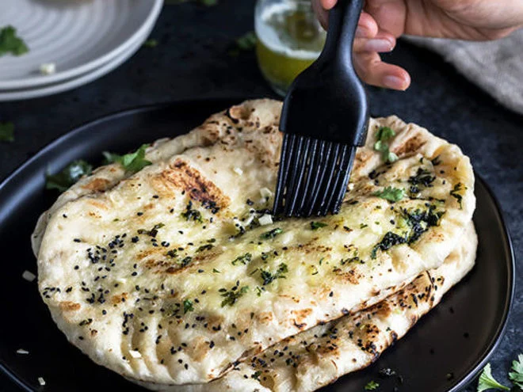

Garlic Naan

This garlic naan bread recipe is our favourite spin on a traditional flat bread from India.
Normally baked inside hot Tandoor ovens with charcoal or wood fire, our naan bread recipe has been altered
to cook right on the stove in a hot, cast-iron skillet.
Ingredients
For the dough :
- 2 cups all-purpose flour (plus extra for dusting)
- 1 teaspoon sugar
- 1 teaspoon salt
- 1 teaspoon baking powder
- 1/2 teaspoon baking soda
- 1/2 cup plain yogurt
- 1/4 cup warm milk (or water)
- 2 tablespoons ghee (or melted butter)
- 2 tablespoons chopped fresh cilantro (optional, for added flavor)
For the Garlic Topping :
- 3-4 cloves garlic (finely minced)
- 2 tbsp melted butter
- 1 tbsp chopped fresh cilantro
Preparation
Prepare the dough
- In a large mixing bowl, combine the flour, sugar, salt, baking powder, and baking soda.
- Make a well in the center and add the yogurt, warm milk, and ghee (or melted butter).
- Mix until the dough starts to come together. Knead the dough for about 5-7 minutes until it’s soft and elastic. If it's too sticky, add a little more flour.
- Cover the dough with a damp cloth and let it rest for at least 1 hour, or up to 2 hours.
Prepare the Garlic Topping
- Mix the minced garlic with melted butter. Set aside.
Shaping the naan
- Preheat a skillet or tandoor over medium-high heat.
- Divide the dough into small balls (about the size of a golf ball).
- On a floured surface, roll out each ball into a thin oval or round shape. Aim for a thickness of about 1/4 inch.
Cook the Naan
- Place the rolled-out naan onto the hot skillet. Cook for 1-2 minutes until bubbles start to form on the surface.
- Flip the naan and cook for another 1-2 minutes, until brown spots appear.
- Brush the top with the garlic-butter mixture while the naan is still hot.
- Optionally, you can finish cooking the naan under a broiler for a few seconds to get a charred effect, but this step is optional.
Serve
- Garnish with additional chopped cilantro if desired.
- Serve warm with your favorite curry or dish.